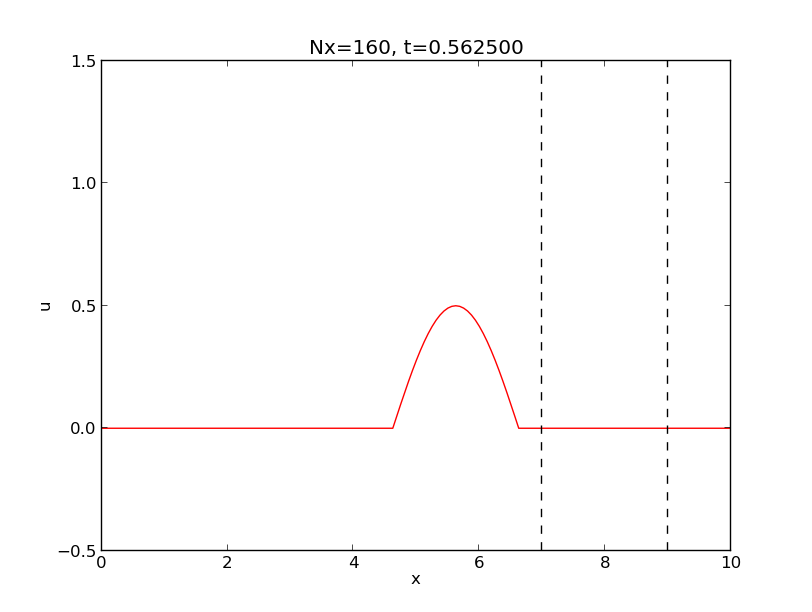

Sammendrag. Dette er et kort notat på norsk for å demonstrere at DokEngang (DocOnce) kan håndtere andre språk enn engelsk.
Norsk er egentlig to språk, bokmål og nynorsk. Bokmål er forfatterens språk og det de fleste (85-90%) skriver i Norge, men nynorsk er ikke særlig forskjellig, spesielt ikke sett med utlendingers øyne. Avstanden mellom norsk og nynorsk er mindre enn mellom norsk og svensk. Voksne nordmenn har sjelden problemer med å forstå skriftlig og muntlig svensk, og alle nordmenn forstår bokmål like lett som nynorsk. Likevel skal alle offentlige dokumenter foreligge på begge språk (!). Dansk ligger veldig nære bokmål, men uttales ganske annerledes.
Dette er et underkapittel av seksjon Introduksjon.
Dette skrivet skal bare demonstrere norsk tekst, så vi trenger ikke tvære ut innholdet. Det er nok å demonstrere at figurtekster og andre spesielle elementer virker med UTF-8 tegnsett. La oss refere her til figur 1 slik man referer til en figur på norsk. Vi gjør også en referanse til litteraturen [1].
Figur 1: Figurtekst på norsk går bra.

Hallo verden er en vanlig måte å teste ut ny teknologi på. I denne oppgaven skal du lage ditt første html-hallo-verden-program.
Du skal lage siden index.html, som lagres i en egen mappe. Her skal
du bruke så mye av det du har lært fra første avsnittet. Tittelen på
siden skal være "Hallo verden!". Innholdet bestemmer du selv. Husk å
lage oppgaven i en egen mappe.